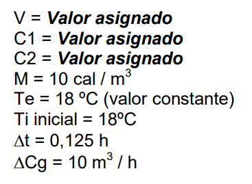

Alumno: Javier Hernán Mora. Universidad FASTA.
a) Simular el comportamiento dinámico del proceso para lazo abierto, utilizando el método de resolución de ecuaciones diferenciales de Euler.
V = 25. C1 = 100. C2 = 2
b) Obtener un gráfico del comportamiento dinámico del proceso (temperatura Ti en función del tiempo).
c) Indicar en el gráfico la constante de tiempo del proceso.
La constante de tiempo está dada por la fórmula: C1 / (C2 * V). El valor es de 4 horas
d) Analizar cómo varía el comportamiento simulado si se duplica el volumen del recinto o si se reduce a la mitad.
e) ¿Qué sucede con la constante de tiempo para las situaciones del inciso d?
La constante de tiempo se reduce a la mitad (De 4 pasa a ser 2)